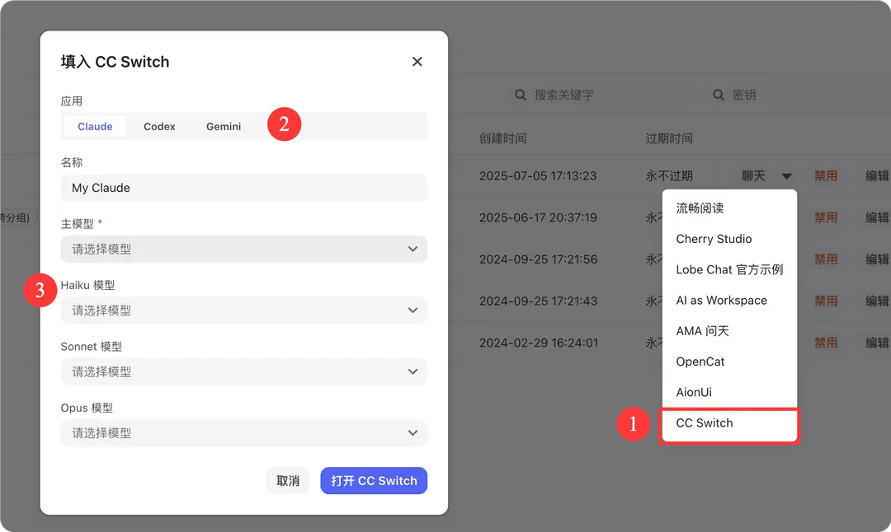

编程
CC Switch 接入教程
完整复刻源站 CC Switch 教程密度：核心特性、Provider/MCP/Prompts 管理、词元.fast 接入和三端安装方式。
ProviderMCPPrompts
项目介绍
🔀 CC Switch 是一款开源、跨平台的 AI CLI 统一管理工具，支持 Claude Code、Codex 和 Gemini CLI 的 Provider 配置一键切换、MCP 服务器统一管理、系统提示词（Prompts）管理以及 Skills 扩展管理， 让你在多个 AI 编程助手之间自由切换，无需手动编辑配置文件。
- GitHub 仓库：https://github.com/farion1231/cc-switch
- 下载地址：GitHub Releases
核心特性
🔌 Provider 管理
- 一键切换 — 在 Claude Code、Codex、Gemini 的 API 配置之间一键切换，无需手动修改环境变量或配置文件
- 多端点支持 — 每个 Provider 可配置多个端点，支持 API Key 管理与延迟测速
- 4 层模型配置 — 支持 Haiku / Sonnet / Opus / Custom 四级模型粒度配置
🛠️ MCP 服务器管理
- 跨应用统一管理 — 单面板管理 Claude / Codex / Gemini 三端的 MCP 服务器
- 三种传输类型 — 支持 stdio、HTTP、SSE（Server-Sent Events）
- 自动同步 — 统一导入导出 + 双向同步
💬 Prompts 管理
- 多预设系统提示词 — 无限预设、快速切换
- 跨应用支持 — Claude（
CLAUDE.md）、Codex（AGENTS.md）、Gemini（GEMINI.md）
- Markdown 编辑器 — CodeMirror 6 + 实时预览
🌐 多平台支持
- 桌面应用 — Windows、macOS、Linux 原生安装包
- Web 版本 — 适用于无头服务器 / SSH 远程环境的浏览器访问方案
- CLI 版本 — 命令行交互模式与命令模式双支持
词元.fast API 接入方法
CC Switch 支持 ccswitch:// Deep Link 协议，可从 词元.fast 令牌管理页一键导入 Provider 配置。
配置步骤
1. 在 词元.fast API 令牌管理页，点击对应令牌的下拉菜单 在菜单中选择 CC Switch 选项，系统会自动唤起 CC Switch 应用并弹出配置弹窗。
2. 在弹窗中完成配置

弹窗各字段说明：
- 应用：顶部切换应用类型 — Claude / Codex / Gemini，根据需要选择目标应用
- 名称：为该配置填写一个名称（例如
My Claude），方便后续在 CC Switch 中识别和切换
- 主模型（必填）— 默认使用的主力模型
- Haiku 模型 — 轻量快速模型
- Sonnet 模型 — 均衡模型
- Opus 模型 — 最强模型
所有模型均为下拉选择，未选择时显示「请选择模型」。
3. 完成配置 点击 「打开 CC Switch」 即可将配置导入 CC Switch 并开始使用；点击 「取消」 放弃本次操作。
安装方式
macOS（推荐 Homebrew）
brew tap farion1231/ccswitch
brew install --cask cc-switchWindows
从 Releases 下载 .msi 安装包或便携版 .zip。
Linux
从 Releases 下载 .deb 包或 .AppImage。
ArchLinux 用户：
paru -S cc-switch-binWeb 版本（无头 / SSH 服务器）
wget https://github.com/farion1231/cc-switch/releases/latest/download/cc-switch-web-linux-x64.tar.gz
tar -xzf cc-switch-web-linux-x64.tar.gz
cd cc-switch-web/
./cc-switch-web默认端口 17666，通过浏览器访问 http://localhost:17666。